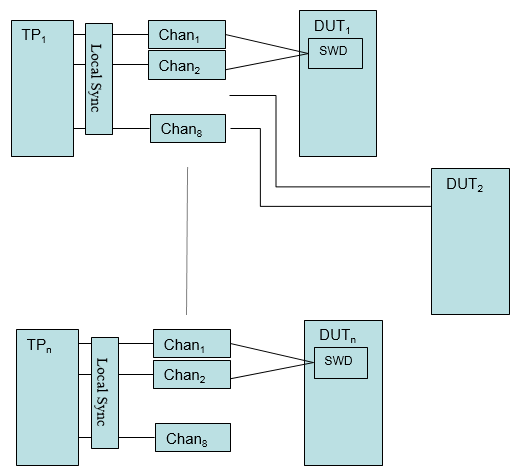

Fast Sync
Serial interfaces on many DUTs require non-deterministic handling. Normally they consist of a small number of pins (1, 2 or 4). Fast Sync enables the local synchronization of the test processor (TP). It enables up to 8 sync ports reacting independently on non-deterministic DUT responses per test processor.
The feature is supported for all Smart Scale cards.
The figure below shows an overview of the Fast Sync feature.

Each test processor supports from 1 to 8 local synchronization, which can be applied in parallel on all the test processors. Therefore, for Match loops and conditional jumps, it eliminates the overhead caused by site scaling synchronization.
Instead of 255 sites only, Fast Sync enables non-deterministic device handling for massive multisites (1024 sites).
Functional changes
- Introduced in SmarTest 7.4.0